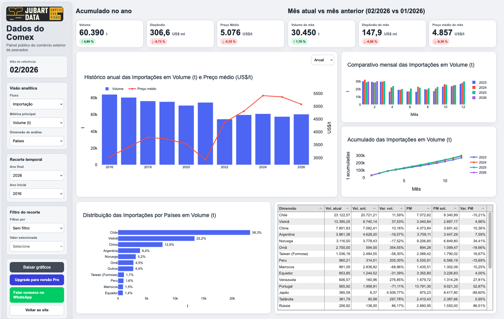

Structured data
Analytical organization of information to track flows, prices, competitive behavior and sector dynamics.
Integrated Market Observatory · JubartData
Jubart combines structured data, recurring monitoring, qualitative research and discourse analysis to support decision-making in complex value chains.
About Jubart
Jubart is a market intelligence company focused on value chains marked by high complexity, low transparency and relevant information asymmetries.
We combine data, monitoring and strategic interpretation to transform scattered signals into applied market reading, supporting companies, associations and sector leaders in making more consistent decisions.
Methodology
Analytical organization of information to track flows, prices, competitive behavior and sector dynamics.
Continuous reading of market movements, with attention to context shifts, repositioning and emerging signals.
Sector listening aimed at capturing perceptions, decision criteria and elements that do not appear only in indicators.
Reading the narratives and positioning of market agents as a tool to qualify interpretation and support decisions.
By the numbers
retail stores monitored per week
Brazilian states with retail coverage
of foreign-trade historical data
active products — tilapia, salmon and cod
Frequently asked questions
Daily price collection across the digital retail channels of Brazilian retail chains. Reports are published weekly, and each one states the exact number of collections and stores monitored for that period.
The report shows the median and price range (P25–P75) observed across hundreds of stores at the same time. Prices vary by region, chain and one-off promotions — the reading is about market trend, not a single point of sale.
The weekly report is free and shows the methodology in practice. The full monthly reports, with brand, regional and foreign-trade context analysis, are available to subscribers.
Integrated Market Observatory
Continuous intelligence on agri-food markets — fish & seafood, coffee and olive oil
The Observatory organizes data, recurring monitoring and strategic interpretation into a structured-access analytical platform. Five axes — Retail, Foreign Trade, Production, News and Macroeconomics — deliver an integrated reading of the market.
Curated, contextualized data published weekly and monthly to support more consistent decisions.
The free weekly report works as a sample lab: anyone can follow the methodology in practice, at no cost, before deciding to subscribe to the full monthly reports.

Reports and solutions
Tools developed to organize data, track market movements and support recurring strategic reading.
Applied studies designed to deepen specific topics, with a focus on prices, competition, retail behavior and sector dynamics.
Periodic publications focused on price tracking, regional dispersion, promotional behavior and market signals.
Integration of data, qualitative research and strategic interpretation to address specific challenges faced by companies, associations and sector leaders.
Current coverage
Weekly retail price tracking across Brazil, with monthly analytical reports available on the portal for Pro subscribers.
Clients and strategic impact
Jubart has already supported strategic projects for relevant companies in the sector, combining data, market listening and analytical reading to guide positioning, value capture and expansion.
A strategic project focused on reading the Brazilian salmon market, with emphasis on price formation, channel segmentation, reputation and structural conditions for leadership.
“The study carried out by JubartData was instrumental in helping us structure our presence in Brazil.”
Jubart in the media
JubartData's weekly report on the salmon retail market in Brazil was cited by InfoSalmon, the leading outlet covering the Chilean salmon farming industry, as a source for analyzing regional price differences and the positioning of fresh and frozen formats in Brazil.
“Fotografía al mercado interno del salmón en Brasil” — InfoSalmon.cl →
Methodological expansion
Developed and validated in complex markets such as fish and seafood, Jubart’s methodology was designed to engage with other value chains marked by information dispersion, low transparency and the need for strategic reading.
More than monitoring indicators, Jubart’s role is to reduce opacity, organize scattered signals and expand the decision-making capacity of its clients.
Applications of the Jubart methodology
Jubart develops reports, dashboards and tailored projects to support strategic reading in complex sectors. To learn more about our monitoring formats and applications for your sector, talk to us on WhatsApp.